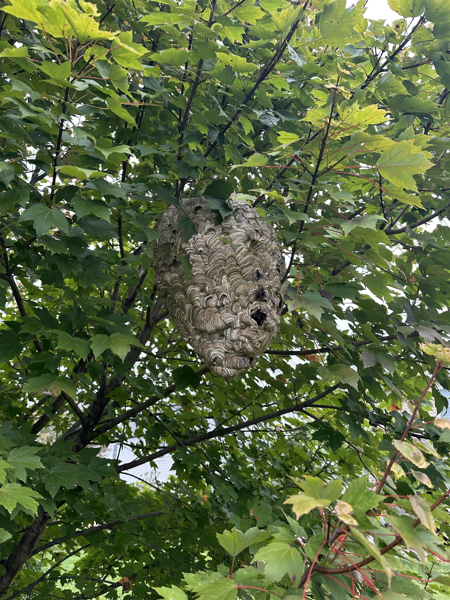

Why Yellow Jackets Are Different From Other Stinging Insects
Yellow jackets aren't bees, aren't paper wasps, and aren't hornets — though Central PA gets all three at various points in the summer. They're aggressive, build hidden nests of 1,000 to 5,000+ workers by late summer, and they get more defensive the closer you get to peak season (August through early October). Multiple stings are routine when a nest is disturbed.
The two most dangerous Harrisburg patterns: ground nests in lawns or under brick patios (you discover them by mowing or stepping on them) and in-wall colonies in soffits or attic spaces of older Harrisburg homes (Bellevue Park, Boas Heights, Allison Hill) where they've been building for months without notice. Both need a licensed applicator. Both have sent people to the ER when treated wrong with hardware-store spray.


What We Treat & How
Ground Nests in Lawns & Beds
The classic late-summer Harrisburg yard call. We treat at dusk when workers are docked, target the entry hole directly, and flag the spot for 48 hours. Mowing-discovered nests are the most common — we respond same-day.
Soffit & Attic Nests
Older Harrisburg housing stock (1900s through 1960s) is full of small soffit gaps and pipe penetrations that become yellow jacket entries. Treatment goes through the entrance; we don't open the structure unless absolutely necessary.
Aerial Bald-Faced Hornet Nests
Football-to-basketball sized gray papery nests in trees, shrubs, or porch ceilings. Ladder work, full protective suit, and direct injection. Pricing higher than ground nests due to access risk.
European Hornets
Big (1+ inch), buzzing, often in tree cavities, soffits, or sheds. Active at dusk and into the night — often misidentified as something exotic. Same treatment approach as bald-faced hornet.
Paper Wasps in Eaves & Patios
The small open-comb nests under porch ceilings, in soffit corners, behind shutters. Less aggressive than yellow jackets but you don't want them where kids play. Easy treatment, often handled on a regular pest visit.
Honey Bee Identification First
About 1 in 3 "yellow jacket" calls turns out to be honey bees. We identify before treating — honey bees get live removal, not extermination. Text us a photo at 717-379-3248 before we come out if you can.
Harrisburg Neighborhoods We Cover
All of the City of Harrisburg (17101–17104, 17109, 17110) — Midtown, Allison Hill, Uptown, Bellevue Park, Boas Heights, Italian Lake. Inner suburbs: Penbrook, Paxtang, Steelton, Highspire. Outer suburbs: Colonial Park, Lower Paxton, Susquehanna Township, Linglestown.